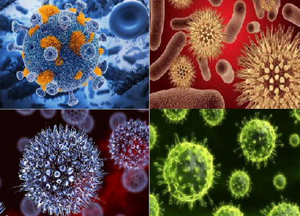
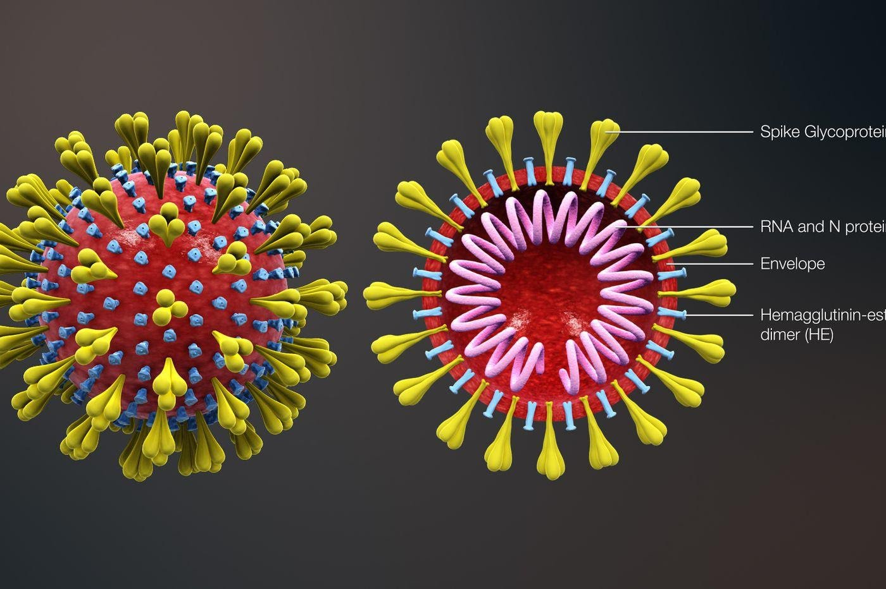
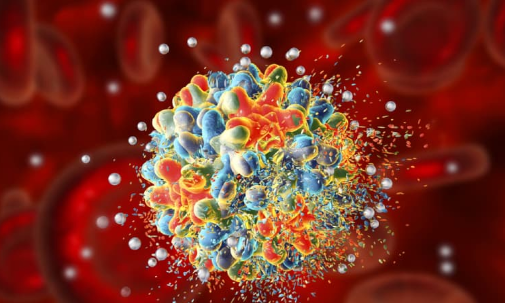

Virus là gì? Sự hình thành của Virus?
Virus là ký sinh trùng siêu nhỏ, thường nhỏ hơn nhiều so với vi khuẩn. Chúng thiếu khả năng phát triển và sinh sản bên ngoài cơ thể vật chủ. Phần lớn virus là nguyên nhân gây bệnh. Thế giới đã trải qua sự bùng phát dịch Ebola năm 2014 ở Tây Phi, đại dịch cúm lợn năm 2009. Và hiện nay là đại dịch Covid-19 đang gây nguy hiểm cho tất cả mọi người.
1. Virus là gì?
Virus là một loại ký sinh trùng nhỏ không thể tự sinh sản. Tuy nhiên, một khi virus lây nhiễm vào một tế bào nhạy cảm, nó có thể điều khiển bộ máy tế bào tạo ra nhiều virus hơn. Hầu hết các virus có RNA và DNA là vật liệu di truyền của chúng. Acid nucleic có thể là chuỗi đơn hoặc chuỗi kép. Toàn bộ hạt virus truyền nhiễm được gọi là virion, bao gồm acid nucleic và vỏ ngoài của protein.
Virus không chứa ribosome vì thế chúng không thể tạo ra protein. Điều này làm cho nó hoàn toàn phụ thuộc vào vật chủ ký sinh. Chúng là loài sinh vật duy nhất không thể sinh sản mà không có tế bào vật chủ.
Sau khi liên lạc với tế bào vật chủ thì nó sẽ chèn vật liệu di truyền vào vật chủ và chiếm lấy chức năng của vật chủ đó. Sau khi lây nhiễm vào tế bào, virus tiếp tục sinh sản nhưng nó tạo ra nhiều protein và vật liệu di truyền hơn thay vì các sản phẩm tế bào thông thường. Các virus đơn giản nhất chỉ chứa đủ RNA hoặc DNA để có thể mã hoá bốn protein. Còn với các virus phức tạp, có thể mã hoá khoảng từ 100 - 200 protein.

Virus có hình dạng và kích thước khác nhau và chúng có thể được phân loại như sau:
- Xoắn Ốc :Virus khảm thuốc lá có hình dạng xoắn ốc.
- Hình Cầu :Hầu hết các loại virus động vật đều có hình dạng như ảnh trên.
-
Hình Phong Bì :Một số virus bao phủ bản thân với một phần được sửa chữa của màng tế bào,
tạo ra một lớp vỏ lipid để bảo vệ. Chúng bao gồm virus cúm và virus HIV.
Ngoài ra, các hình dạng này có thể được kết hợp với nhau tạo ra các hình dạng của virus không theo tiêu chuẩn nào cả.
2. Sự hình thành của virus
Virus được tìm thấy ở bất cứ nơi nào có sự sống và có lẽ đã tồn tại kể từ khi các tế bào sống phát triển đầu tiên. Nguồn gốc của virus không rõ ràng vì chúng không tạo thành hóa thạch. Cho nên, các nhà khoa học đã sử dụng kỹ thuật phân tử để so sánh DNA hoặc RNA của virus và đây cũng là phương tiện hữu ích để điều tra cách chúng phát sinh.
Virus được tìm thấy ở bất cứ nơi nào có sự sống và có lẽ đã tồn tại kể từ khi các tế bào sống phát triển đầu tiên. Nguồn gốc của virus không rõ ràng vì chúng không tạo thành hóa thạch. Cho nên, các nhà khoa học đã sử dụng kỹ thuật phân tử để so sánh DNA hoặc RNA của virus và đây cũng là phương tiện hữu ích để điều tra cách chúng phát sinh.
Có ba giả thuyết chính nhằm giải thích sự hình thành của virus:
- Giả thuyết hồi quy:
Virus có thể đã từng là những tế bào nhỏ ký sinh trên các tế bào lớn hơn. Theo thời gian, các gen không được yêu cầu bởi ký sinh trùng của chúng sẽ bị mất đi. Vi khuẩn rất nhỏ như rickettsia và chlamydia là những tế bào sống, giống như virus và chỉ sinh sản bên trong tế bào vật chủ. Giả thuyết nào cho thấy sự phụ thuộc của ký sinh trùng có khả năng gây ra sự mất gen cho phép sống sót ở bên ngoài một tế bào. Đây cũng có thể được gọi là giả thuyết thoái hóa hoặc giả thuyết giảm.
- Giả thuyết nguồn gốc tế bào:
Một số virus có thể đã tiến hóa từ DNA hoặc RNA và thoát ra khỏi gen của một sinh vật lớn hơn. DNA thoát ra có thể đến từ các plasmids ( là các mảnh DNA trần có thể di chuyển giữa các tế bào), hoặc transposons (các phân tử DNA sao chép và di chuyển đến các vị trí khác nhau trong gen của tế bào). Từng được gọi là “gen nhảy” transposon là ví dụ về các yếu tố di truyền và có thể là nguồn gốc của một số virus. Chúng được phát hiện trên ngô bởi Barbara McClintock vào năm 1950.

- Giả thuyết đồng tiến hóa:
Đây được gọi là giả thuyết đầu tiên về virus, và cho rằng virus có thể đã tiến hóa từ các phân tử phức tạp của protein và acid nucleic cùng lúc với tế bào xuất hiện lần đầu tiên trên Trái Đất. Và nó sẽ phụ thuộc vào sự sống của tế bào trong hàng tỷ năm.
Viroids là các phân tử RNA không được phân loại là virus vì chúng thiếu lớp vỏ protein. Chúng có những đặc điểm chung cho một số loại virus và thường được gọi là tác nhân phụ. Viroids là mầm bệnh quan trọng của thực vật. Chúng không mã hóa protein nhưng tương tác với tế bào vật chủ và sử dụng bộ máy của vật chủ để sao chép.
Virus viêm gan delta của người có bộ gen RNA tương tự viroid nhưng có vỏ protein và có nguồn gốc từ virus viêm gan B đồng thời cũng không thể tự sản xuất. Do đó, nó là một virus bị lỗi. Mặc dù bộ gen của virus viêm gan delta có thể được sao chép độc lập một lần trong tế bào vật chủ, nhưng nó vẫn cần có sự trợ giúp của virus viêm gan B để cung cấp một lớp vỏ protein để nó có thể truyền đến các tế bào mới. Vì vậy, những loại virus này phụ thuộc vào sự hiện diện của các loại virus khác trong tế bào chủ, được gọi là vệ tinh và có thể đại diện cho các trung gian tiến hóa của viroid và virus.
Trước đây, có những vấn đề với tất cả những giả thuyết này: giả thuyết hồi quy không giải thích được tại sao ngay cả những ký sinh trùng tế bào nhỏ nhất cũng không giống với virus. Giả thuyết nguồn gốc tế bào cũng không giải thích được viên nang phức tạp và cấu trúc khác trên các hạt virus. Giả thuyết đầu tiên về virus đã chống lại định nghĩa về virus ở chỗ chúng yêu cầu tế bào vật chủ. Virus hiện được công nhận là cổ xưa và có nguồn gốc từ trước sự phân kỳ của sự sống.
Bằng chứng về thế giới tổ tiên của tế bào RNA và phân tích máy tính về trình tự DNA của virus và vật chủ đang giúp hiểu rõ hơn về mối quan hệ tiến hoá giữa các loại virus khác nhau, và có thể xác định tổ tiên của virus hiện đại. Dường như tất cả các loại virus hiện được biết đến đều có chung một tổ tiên và virus có thể đã phát sinh nhiều lần trong quá khứ bởi một hoặc nhiều cơ chế.

3. Ai tìm ra virus?
Đến cuối thế kỷ 19, quan niệm rằng các vi sinh vật đặc biệt là vi khuẩn có thể gây bệnh đã được thiết lập tốt. Tuy nhiên, các nhà nghiên cứu đang tìm kiếm một căn bệnh đáng lo ngại trong thuốc lá - có phần khó hiểu về nguyên nhân của nó.
Trong một bài viết nghiên cứu năm 1886 có tự đề là “Liên quan đến bệnh khảm của thuốc lá” của nhà hoá học người Đức Adolf Mayer, đã công bố phát hiện rằng khi ông nghiền nát những chiếc lá bị nhiễm bệnh và tiêm nước độc hại vào tĩnh mạch của chiếc lá khoẻ mạnh, điều đó sẽ dẫn gây ra các đốm và đổi màu trên lá.
Mayer phỏng đoán chính xác rằng điều gây ra bệnh khảm thuốc lá bắt đầu từ trong nước ép lá. Tuy nhiên, kết quả cụ thể hơn đã không đúng với phỏng đoán của ông. Mayer cảm thấy chắc chắn rằng điều mà gây ra căn bệnh này đều có nguồn gốc từ vi khuẩn, nhưng ông không thể phân lập được tác nhân gây bệnh hoặc xác định nó dưới kính hiển vi.
Năm 1898, khi dự hiện diện của virus được thừa nhận, nhà khoa học người Hà Lan Martinus Beijerinck đã cho rằng nguyên nhân gây bệnh khảm thuốc lá không phải là vi khuẩn mà là một loại virus sống trong chất lỏng. Và các thí nghiệm sau đó của ông cũng đã chỉ ra sự tồn tại của virus.
Đến năm 1931 một kính hiển vi điện tử được phát triển bởi nhà khoa học người Đức Ernst Ruska và Max Knoll. Những hình ảnh đầu tiên về virus khảm thuốc lá đã được chủ bởi Ruska vào năm 1939. Do đó, việc phát hiện virus đã được xuất hiện.